The idea
A scanner that could get people hurt
It started as a pet-safety scanner: point your phone at a plant and find out whether it will hurt your dog. Widening it to hikers, campers and parents made it far more useful, and far more dangerous to get wrong.
Plants are easy to catalog. Mushrooms, berries and moving animals are not, and the cost of a wrong answer climbs fast:
| Category | Why it’s hard | Cost of a wrong answer |
|---|---|---|
| Mushrooms & berries | Deadly species look nearly identical to edible ones | Organ failure or death |
| Snakes | Blurry photos of moving animals in mud and shade | A fatal delay in treatment |
| Toads | A few species are lethal to a dog that mouths them | A pet’s life |
| Plants | Consistent patterns, easy to catalog | Usually a rash |
The pivot
Awareness, not identification
An app that guesses wrong about a mushroom can kill someone. So this one never guesses. It doesn’t answer “What is this?” It answers “What’s been documented around here, and what do I do about it?”
- Never say safe.No “edible,” “harmless” or “non-venomous” anywhere in the product.
- Show what’s documented, not what it thinks it sees.Real sightings near a real place, so people plan before they go.
- Make the right action one tap away.How to stay clear, what to do if someone is exposed, and who to call.
First pass
Five screens in Figma
I designed the core flow: welcome, log in, choose a location, regional results and a safe-distance camera. The visual language came from old field guides: deep forest green, a warm paper background, a characterful serif, and terracotta for anything you can act on.
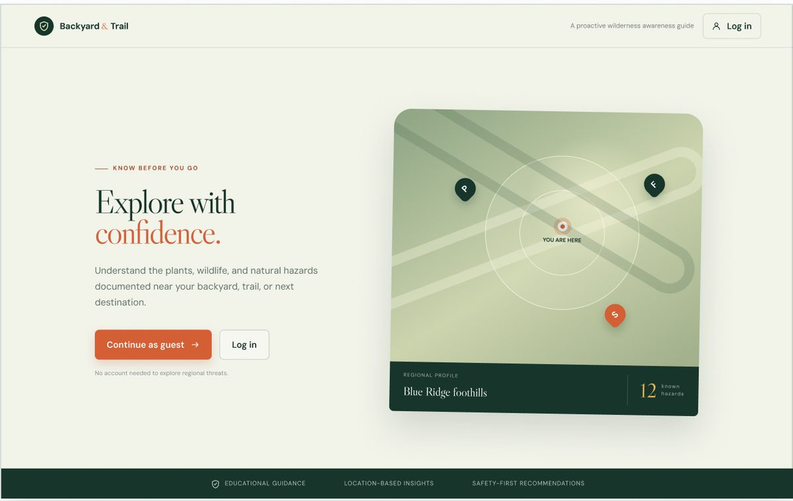
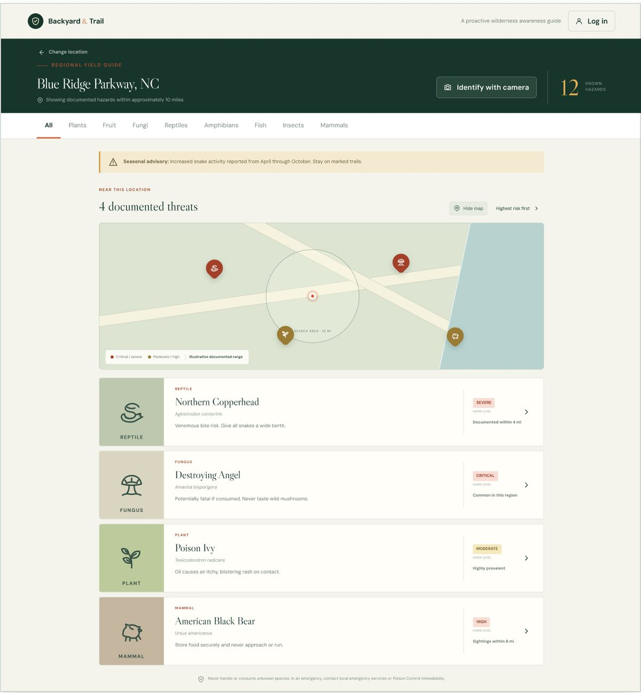
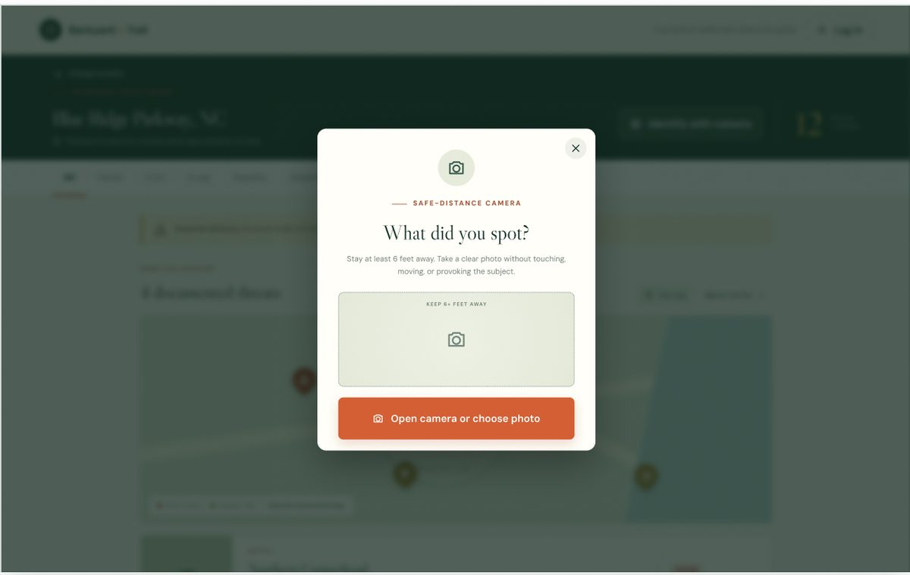
Critique
What didn’t hold up
The look was right. Reviewing the screens against the safety rules turned up places where the design quietly broke them.
“What did you spot?” invited the exact guess the product had ruled out, on the riskiest screen in the app.
“12 known hazards” sat above “4 documented threats,” and the cards described distance four different ways.
Severe, Critical and High were all small red pills, and the map legend had two colors for four levels.
Poison Control lived in 10-pixel text at the bottom of the results.
The idea began with dogs, but no screen considered them.
A trail app gets used on a phone, often with one bar of signal or none.
Decisions
Eight changes that made it trustworthy
From “Identify” to “Compare”
The camera became “Compare a photo.” A dashed ring in the viewfinder reminds people to keep six feet away. After the shot, the app lists what’s documented within 10 miles in that group, with real photos to compare against, under a “Treat it as dangerous” banner. Photos never leave the phone.
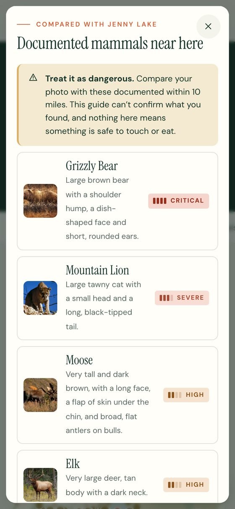
A harm scale you can read without color
Four levels, each with a written label, a four-step meter and a plain-language meaning. Every hazard is rated twice, for people and for dogs, because the risks differ: a cane toad is a High risk to people and a Critical one to a dog.
Can be fatal. Call 911 or Poison Control right away.
Needs emergency medical care.
Can cause serious illness or injury.
Painful or irritating. Usually treated at home.
Real numbers, from real sightings
Every count on screen now comes from iNaturalist’s research-grade sightings within 10 miles of the place you pick, for the 40 most dangerous species in the guide. The header count always matches the list, and each card says how many times the species was seen nearby. Some numbers from the live app:
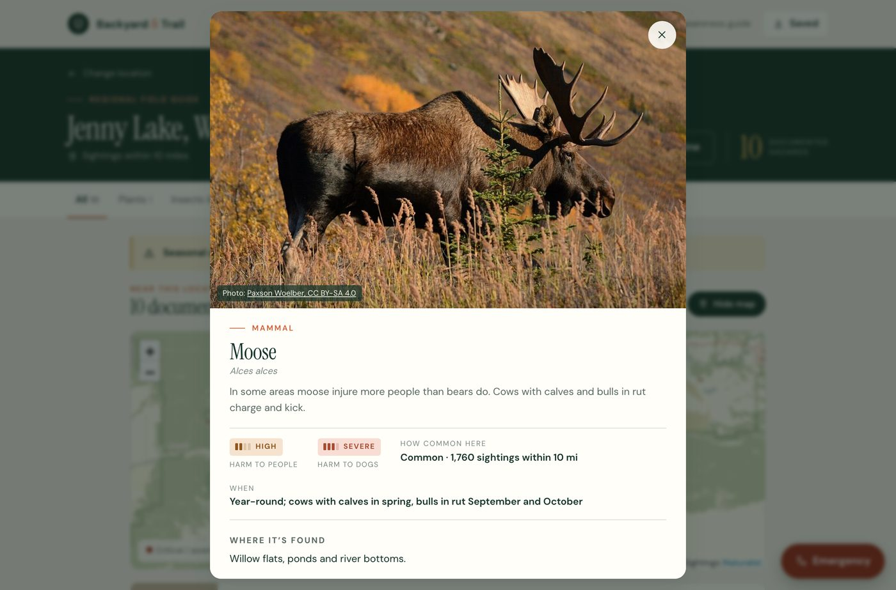
Hiking with a dog
One switch brings the original pet owner back. Harm levels change to the risk for dogs, the list re-sorts, and each card adds dog-specific advice, like rinsing a dog’s mouth with the hose aimed forward after it mouths a cane toad.
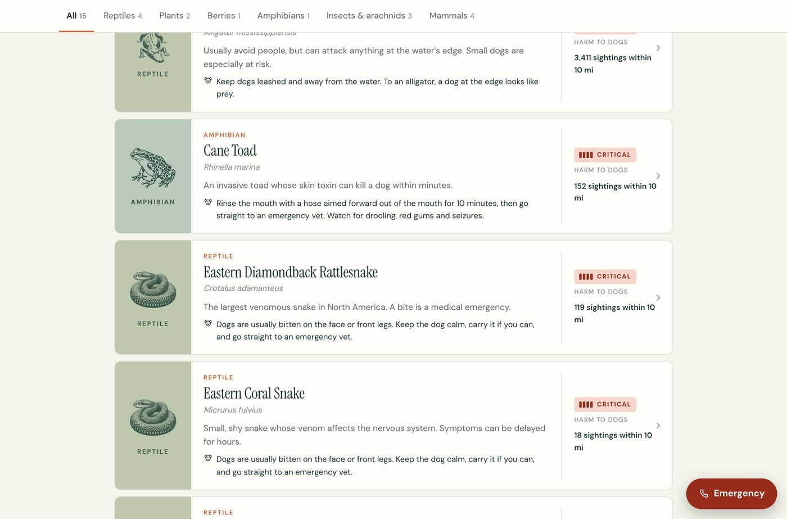
Help is always one tap away
A red Emergency button floats on every guide screen. It opens 911, Poison Control and the ASPCA pet poison line, with what to tell them and what to do with no signal.
It works with no signal
“Save for offline” keeps a place’s field guide, photos and illustrations on the phone. Without a connection, the guide still opens, says when it was saved, and explains that only the map needs signal.
Asking before the phone asks
Before the browser’s permission prompt, a short screen explains what the app will use and exactly what leaves the phone. Every dead end has a way forward: a blocked camera falls back to choosing a photo, a place that isn’t found suggests what to try, and an offline place that isn’t saved points to saved packs.
No account needed
The mockups opened with a login. I weighed what an account would add, mainly syncing saved places between devices, against what it costs: storing where people go, and a password prompt at the trailhead. The app stays free and open to everyone, with no sign-up. Saved places, offline packs and preferences like dog mode or a sting allergy stay on the phone. People move saved places between devices by exporting a small file or sharing a link, and one screen explains in plain words what is sent where.
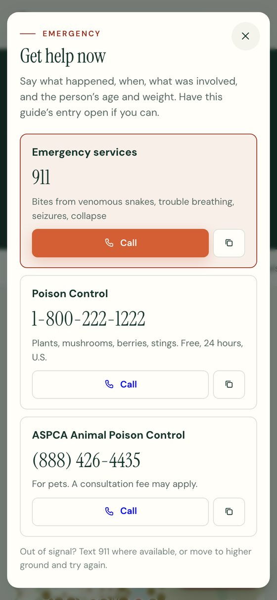
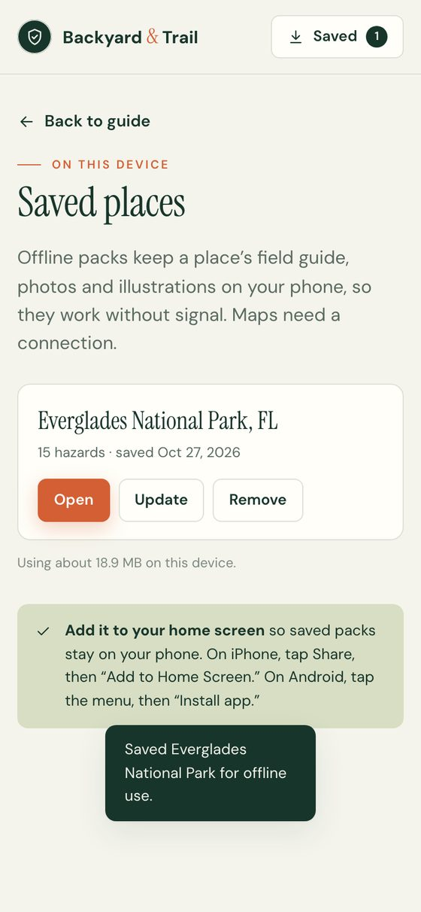
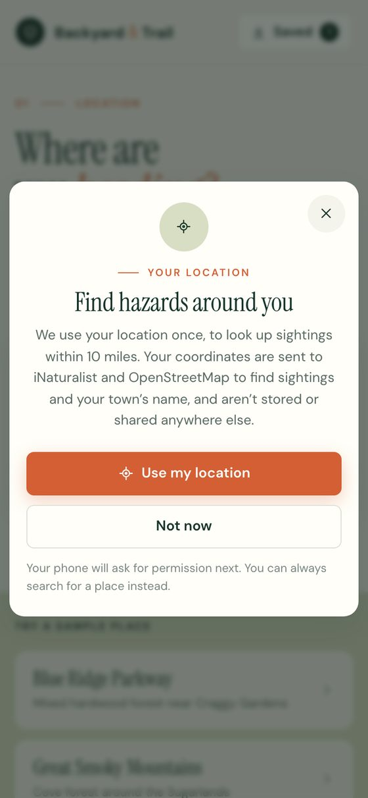
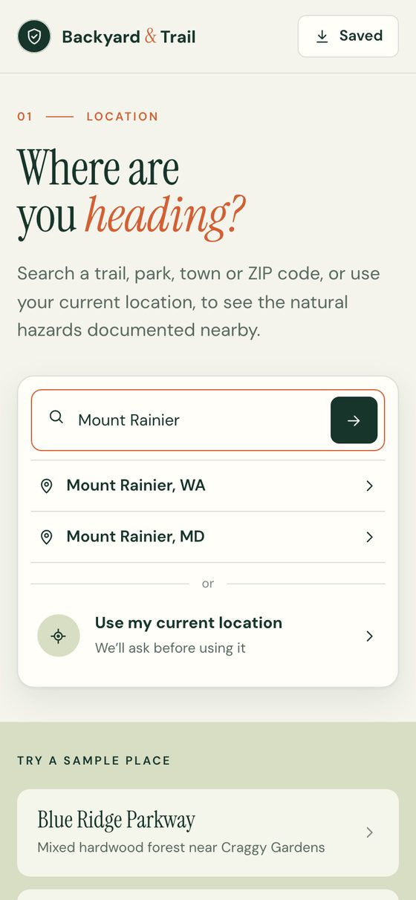
Craft
A field guide, not a dashboard
I sourced engraved illustrations for every kind of hazard, from coiled snakes to a bull elk, so the results read like pages of an old field guide. Claude cleaned them for the cards: removing backgrounds, a stock watermark grid and stray marks, and tinting them to the palette’s green. Every hazard also has a freely licensed, credited photo from Wikimedia Commons, cropped so heads, caps and flowers stay in frame.
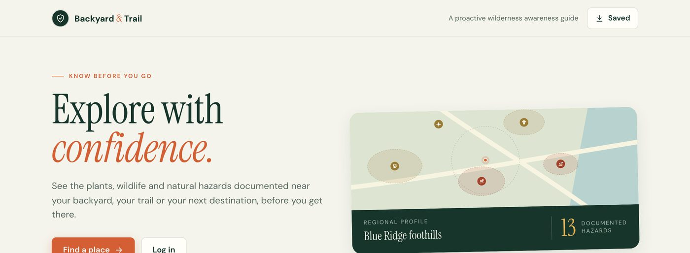
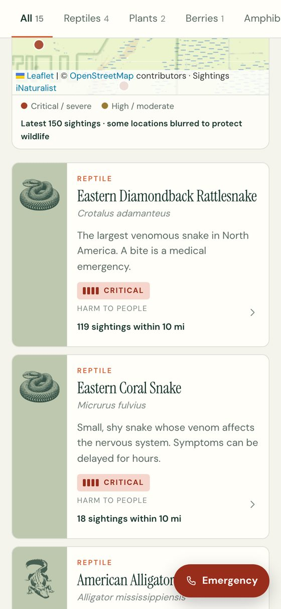
Process
From mockup to working app
- Figma mockupsFive screens and the visual language.
- Critique and a clickable prototypeThe safety review above, applied to a prototype with sample regions.
- RefinementColors sampled from the mockups, field-guide illustrations, real photos and a phone layout.
- More of the countryThe Northern Rockies and South Florida, ZIP lookup, and animals like moose, wolves and alligators.
- A real web appAny U.S. place, live iNaturalist sightings, a real map, a live camera and offline packs that work without signal.
Collaboration
Working with Claude
My calls
- The concept and its safety rules
- The Figma mockups and visual language
- The illustrations and their style
- Which regions, animals and features to add, and keeping it account-free
Claude’s work
- Design critique against the safety rules
- The prototype and the web app
- Sightings, maps and offline storage
- Checking every screen at phone size
Next
What I’d do before a wide release
- Expert review of every harm level and first-aid step, with herpetologists, mycologists and Poison Control.
- Field testing with hikers and dog owners on real trails, with real signal problems.
- Photo matching that ranks only the species documented nearby, run on a server so it can use AI safely.